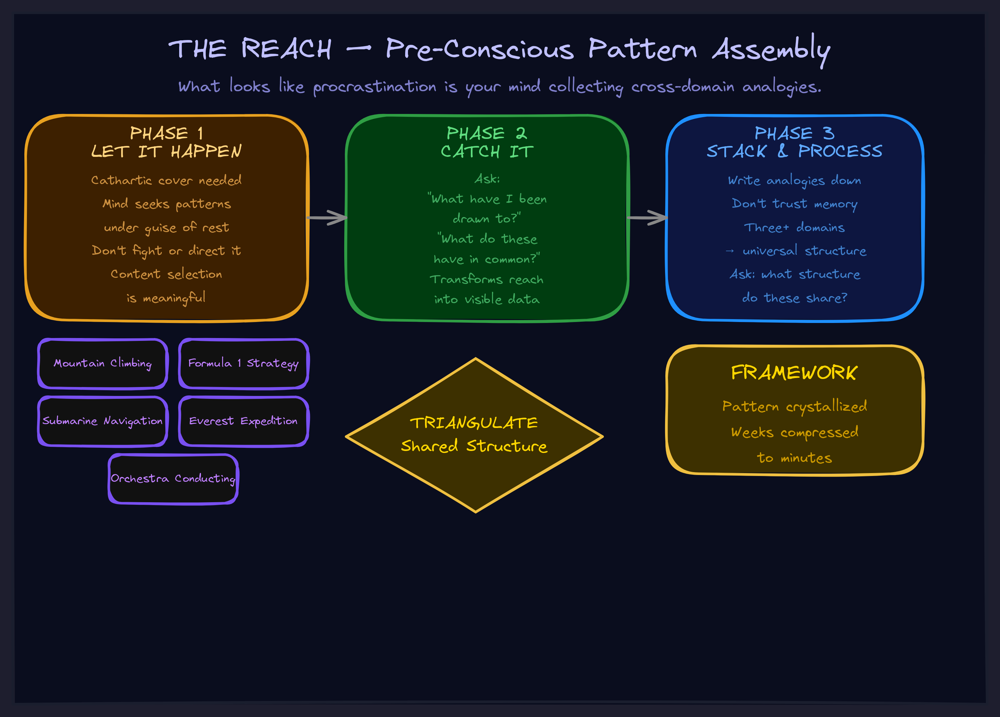

May 2026Naming & vocabularyThe operator
What Your "Distraction" Is Actually Doing
The pre-conscious pattern assembly that looks like procrastination — and how to make it productive.

The Guilt Loop
You're stuck on a hard problem. Architecture for a new system, strategy for a new market, design for a product that doesn't exist yet. The complexity is real — you can't hold it all in your head at once.
So you open YouTube. Or Reddit. Or you start reading articles that have nothing to do with work. You watch documentaries about Everest expeditions, or deep dives into Formula 1 pit strategy, or breakdowns of how submarines navigate under ice.
And you feel guilty. "I should be working. This is avoidance. I'm procrastinating."
You're probably not.
Your mind isn't randomly avoiding work. It's seeking patterns related to your work — but doing so outside conscious direction.
The Reach
There's a phenomenon I call the Reach. It's what happens when your mind encounters a problem too complex for conscious processing. Instead of shutting down, it starts scanning — pulling you toward content that feels relevant even when you can't say why.
The key word is feels. The emotional resonance comes before the intellectual connection. You're drawn to extreme environment content not because you consciously think "coordination under pressure maps to my architecture problem" — but because something deeper recognizes the structural match.
This is pattern adjacency. Your pre-conscious mind finds domains that share structure with your problem, even when they share zero surface features.
How I Discovered This
I was stuck on agent architecture. The complexity was genuinely overwhelming. I noticed myself watching content about Everest expeditions, U2 spy plane flights, wingsuit jumps.
First response: guilt. "I should be working."
Second response: curiosity. "Wait — why this content? Why extreme environments specifically?"
That second response changed everything. I realized my mind wasn't randomly browsing. It was collecting analogies. Every piece of content I was drawn to shared a common structure: coordination under extreme conditions with high stakes and limited communication bandwidth.
That was my architecture problem. My pre-conscious had recognized it before my conscious mind could articulate it.
The Three Phases
Once you see the Reach, you can work with it instead of fighting it. There are three distinct phases:
1. Let It Happen
The Reach works precisely because it's not controlled. If you try to direct it consciously — "I should look for architecture analogies" — you get forced brainstorming. That's a different, much shallower process.
The Reach needs its cathartic cover. You are cooling off. You are taking a break. The break is real. But the content selection is meaningful. Your mind is choosing specific patterns under the guise of relaxation.
Let the YouTube session happen. Don't demand it be productive. The productivity comes from the next step.
2. Catch It
This is the critical moment. After the Reach has been running for a while — after you've accumulated content — you pause and ask one question:
"What have I been drawn to? What do these things have in common?"
That question transforms the Reach from invisible distraction into visible data. You're not catching it to stop it. You're catching it to read it.
The catching question reveals what your pre-conscious was working on. In my case: "These are all coordination-under-pressure scenarios." Now I had signal.
3. Stack and Process
Write down the analogies. Don't trust memory — the material dissipates if you don't externalize it. Then ask: "What structure do these domains share with my actual problem?"
Three analogies from different domains, triangulated against each other, will often reveal the universal structure your mind was reaching for. In my case, the triangulation produced a four-part framework — Pilot, Vehicle, Mission Control, Interaction Loops — that directly solved my architecture problem.
The YouTube session wasn't wasted time. It was the raw material for a framework that would have taken weeks to arrive at through pure deliberation.
Why This Matters for Executives
This isn't just about personal productivity hacks. The Reach has direct implications for how you run teams and make decisions.
For yourself
If you're a founder or executive dealing with genuinely novel problems — not execution problems but architecture problems, strategy problems, "what should this even look like" problems — the Reach is one of your most valuable cognitive tools. Guilt-tripping yourself out of it means cutting off your best pattern recognition at the source.
For your team
When you see a senior person "procrastinating" on a hard problem, consider that they might be Reaching. The question isn't "why aren't they working?" It's "what patterns are they collecting?" Some of the best strategic insights come from people who had the space to reach before they were forced to decide.
For AI strategy
AI is excellent at processing stacked analogies once they're explicit. But AI can't Reach for you — it doesn't have the felt sense that guides content selection. The human Reach combined with AI processing is more powerful than either alone. You supply the pattern-adjacent domains. AI triangulates the universal structure. That's a workflow worth building.
The Protocol
Use it next time you're stuck on a problem that's too big to think through directly:
- Notice what you're drawn to. Not "random entertainment" — what specifically? What domains, what themes, what structures?
- Don't fight it. The catharsis is real. You need the cooling. But stay curious about the selection.
- Catch it. After 20–60 minutes, pause. Ask: "What do these have in common? Why these specifically?"
- Write it down. Three or more analogies from different domains. Don't trust your memory.
- Triangulate. "What structure do these share with my actual problem?" Do this with a colleague, an AI, or a whiteboard. The universal pattern is in the intersection.
- Test the click. When the pattern emerges, you'll feel it — a sense of recognition, not construction. If it clicks, apply it. If it doesn't, the stack needs more items.
The reach is the input to insight. Guilt is the tax you pay for not understanding how your own mind works.
What Comes Next
The Reach is one piece of a larger cognitive toolkit — how insights form, how to validate them, and how to capture them before they fade. If you want to see how this maps to building AI systems that actually compound intelligence instead of just automating tasks, that's what we do.
Explore the frameworks to see the full picture. Or if you're an executive dealing with complexity that feels too big to hold — the kind where your best people are "procrastinating" because the problem hasn't been structured yet — let's talk about it.